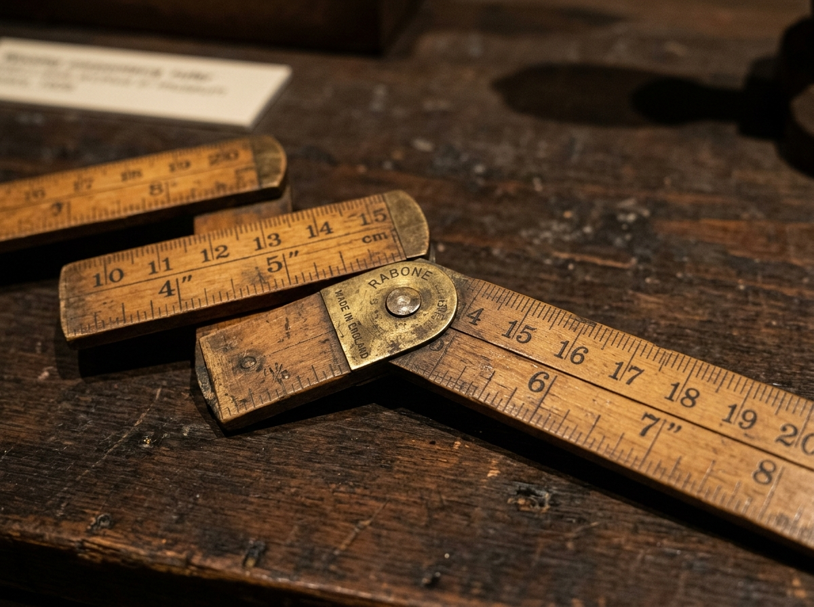

Wooden Folding Ruler
Desk Collection • Room 02

Wooden Folding Ruler. Acquired 1970. Bound by brass hinges and seasoned boxwood, it unfolds six feet of tactile measurement. Its incised increments keep steady geometric faith against shifting human ambition.
Curator's Note • Fun Fact
Anton Ullrich patented the spring-joint folding ruler in 1886.